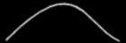
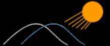
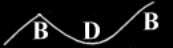
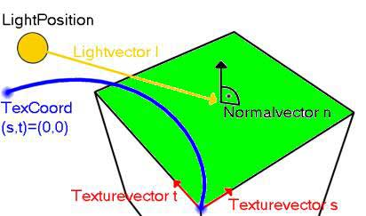

|
第22課 |
 |
 |
凹凸映射，多重紋理擴展:
這是一課高級教程，請確信你對基本知識已經非常瞭解了。這一課是基於第六課的代碼的，它將建立一個非常酷的立體紋理效果。 |
|
 |
 |
這一課由Jens Schneider所寫，它基本上是由第6課改寫而來的，在這一課裡，你將學習：
- 怎樣控制多重紋理
- 怎樣創建一個「假」的凹凸映射
- 怎樣做一個標誌，它看起來在你的場景上方
- 怎樣使矩陣變化更有效率
- 基本的多通道渲染
因為上面提到的很多方面是高級渲染得內容，我們在講述的時候會先說明理論，接著在分析代碼 。如果你已經熟悉了這些理論，你可以跳過他們，直接看代碼。當你遇到什麼問題的時候，不妨回過頭來看看這些理論。
最後這份代碼超過了1200行，大部分我們在前面的教程中遇到過了。我不會解釋每一行代碼，只在重要的地方做些提示，好了，讓我們開始吧。 |
 |
#include <string.h> // 字符串處理函數
|
MAX_EMBOSS常量定義了突起的最大值 |
|
#define MAX_EMBOSS (GLfloat)0.01f // 定義了突起的最大值
|
好了，現在我們準備使用GL_ARB_multitexture這個擴展，它非常簡單。
大部分圖形卡不止一個紋理單元，為了利用這個功能，你必須檢查GL_ARB_multitexture是否被支持，它可以使你同時把2個或多個不同的紋理映射到OpenGL圖元上。開起來這個功能好像沒有太大的作用，但當你使用多個紋理時，如果能同時把這些紋理值混合，而不使用費時的乘法運算，你將會得到很高的速度提高。
現在回到我們的代碼，__ARB_ENABLE用來設置是否使用ARB擴展。如果你想看你的OpenGL擴展，只要把#define EXT_INFO前的註釋去掉就行了。接著，我們在運行檢查我們的擴展，以保證我們的程序可以在不同的系統上運行。所以我們需要一些內存保存擴展名的字符串，他們是下面兩行。接著我們用一個變量multitextureSupported來標誌當前系統是否能使用multitexture擴展，並用maxTexelUnits記錄運行系統的紋理單元，這個值最少是1。 | |
#define __ARB_ENABLE true // 使用它設置是否使用ARB擴展
// #define EXT_INFO // 把註釋去掉,可以在啟動時查看你的擴展
#define MAX_EXTENSION_SPACE 10240 // 保存擴展字符
#define MAX_EXTENSION_LENGTH 256 // 每個擴展字符串最大的長度
bool multitextureSupported=false; // 標誌是否支持多重渲染
bool useMultitexture=true; // 如果支持,是否使用它
GLint maxTexelUnits=1; // 紋理處理單元的個數
|
下面的函數定義用來使用OpenGL的擴展函數，你可以把PFN-who-ever-reads-this看成是預先定義的函數類型，因為我們不清楚是否能得到這些函數的實體，所以先把他們都設置為NULL。glMultiTexCoordifARB函數是glTexCoordif函數的擴展，它門的功能相似，其中i為紋理坐標的維數，f為數據的類型。最後兩個函數用來激活紋理處理單元，可以使用特定的紋理單元來邦定紋理。
順便說一句，ARB是"Architectural Review Board"的縮寫，用來定義這個組織提出的對OpenGL的擴展，並不強制OpenGL的實現必須包含這個功能，但他們希望這個功能得到廣泛的支持。當前，只有multitexture被加入到ARB中，這從另一個方面支持multitexture的擴展將大大的提高渲染速度。 |
|
PFNGLMULTITEXCOORD1FARBPROC glMultiTexCoord1fARB = NULL;
PFNGLMULTITEXCOORD2FARBPROC glMultiTexCoord2fARB = NULL;
PFNGLMULTITEXCOORD3FARBPROC glMultiTexCoord3fARB = NULL;
PFNGLMULTITEXCOORD4FARBPROC glMultiTexCoord4fARB = NULL;
PFNGLACTIVETEXTUREARBPROC glActiveTextureARB = NULL;
PFNGLCLIENTACTIVETEXTUREARBPROC glClientActiveTextureARB= NULL;
|
下面我們來定義一些全局變量：
- filter定義過濾器類型
- texture[3]保存三個紋理
- bump[3]保存三個凹凸紋理
- invbump[3]保存三個反轉了的凹凸紋理
- glLogo保存標誌
- multiLogo保存多重紋理標誌
|
|
GLuint filter=1; // 定義過濾器類型
GLuint texture[3]; // 保存三個紋理
GLuint bump[3]; //保存三個凹凸紋理
GLuint invbump[3]; // 保存三個反轉了的凹凸紋理
GLuint glLogo; // glLogo保存標誌
GLuint multiLogo; // multiLogo保存多重紋理標誌
GLfloat LightAmbient[] = { 0.2f, 0.2f, 0.2f}; // 環境光
GLfloat LightDiffuse[] = { 1.0f, 1.0f, 1.0f}; // 漫射光
GLfloat LightPosition[] = { 0.0f, 0.0f, 2.0f}; // 光源位置
GLfloat Gray[] = { 0.5f, 0.5f, 0.5f, 1.0f};
|
下面一塊代碼用來保存立方體的紋理和坐標，每5個數字描述一個頂點，包含2D的紋理坐標和3D的頂點坐標。 |
|
// 立方體的紋理和坐標
GLfloat data[]= {
// 前面
0.0f, 0.0f, -1.0f, -1.0f, +1.0f,
1.0f, 0.0f, +1.0f, -1.0f, +1.0f,
1.0f, 1.0f, +1.0f, +1.0f, +1.0f,
0.0f, 1.0f, -1.0f, +1.0f, +1.0f,
// 背面
1.0f, 0.0f, -1.0f, -1.0f, -1.0f,
1.0f, 1.0f, -1.0f, +1.0f, -1.0f,
0.0f, 1.0f, +1.0f, +1.0f, -1.0f,
0.0f, 0.0f, +1.0f, -1.0f, -1.0f,
// 上面
0.0f, 1.0f, -1.0f, +1.0f, -1.0f,
0.0f, 0.0f, -1.0f, +1.0f, +1.0f,
1.0f, 0.0f, +1.0f, +1.0f, +1.0f,
1.0f, 1.0f, +1.0f, +1.0f, -1.0f,
// 下面
1.0f, 1.0f, -1.0f, -1.0f, -1.0f,
0.0f, 1.0f, +1.0f, -1.0f, -1.0f,
0.0f, 0.0f, +1.0f, -1.0f, +1.0f,
1.0f, 0.0f, -1.0f, -1.0f, +1.0f,
// 右面
1.0f, 0.0f, +1.0f, -1.0f, -1.0f,
1.0f, 1.0f, +1.0f, +1.0f, -1.0f,
0.0f, 1.0f, +1.0f, +1.0f, +1.0f,
0.0f, 0.0f, +1.0f, -1.0f, +1.0f,
// 左面
0.0f, 0.0f, -1.0f, -1.0f, -1.0f,
1.0f, 0.0f, -1.0f, -1.0f, +1.0f,
1.0f, 1.0f, -1.0f, +1.0f, +1.0f,
0.0f, 1.0f, -1.0f, +1.0f, -1.0f
};
|
下一部分代碼，用來這運行時確定是否支持多重紋理的擴展。
首先，我們假定一個字符串包含了所有的擴展名，各個擴展名之間用'\n'分開。我們所要做的就是在其中查找是否有我們需要的擴展。如果成功找到則返回TRUE，否則返回FALSE。 | |
bool isInString(char *string, const char *search) {
int pos=0;
int maxpos=strlen(search)-1;
int len=strlen(string);
char *other;
for (int i=0; i<len; i++) {
if ((i==0) || ((i>1) && string[i-1]=='\n')) { // 新的擴展名開始與這裡
other=&string[i];
pos=0; // 開始新的比較
while (string[i]!='\n') { // 比較整個擴展名
if (string[i]==search[pos]) pos++; // 下一個字符
if ((pos>maxpos) && string[i+1]=='\n') return true; // 如果整個擴展名相同則成功返回
i++;
}
}
}
return false; // 沒找到
}
|
現在我們需要先取得擴展名字符串，並把它轉換為以'\n'分割的字符串，接著調用以上定義的函數看看是否包含我們需要的擴展。如果定義了__ARB_ENABLE則使用多重紋理擴展，接下來我們檢查是否支持GL_EXT_texture_env_combine擴展，這個擴展提供各個紋理單元複雜的交互方式，利用它可以完成複雜的混合方程。如果所有的擴展都被支持，我們首先取得紋理單元的個數，把它保存到變量maxTexelUnits中，接著通過函數wglGetProcAdress把各個函數定義連接到各自的實體上，這樣在後面的程序中就可以使用這些函數了。 |
|
bool initMultitexture(void) {
char *extensions;
extensions=strdup((char *) glGetString(GL_EXTENSIONS)); // 返回擴展名字符串
int len=strlen(extensions);
for (int i=0; i<len; i++) // 使用'\n'分割各個擴展名
if (extensions[i]==' ') extensions[i]='\n';
#ifdef EXT_INFO
MessageBox(hWnd,extensions,"supported GL extensions",MB_OK | MB_ICONINFORMATION);
#endif
if (isInString(extensions,"GL_ARB_multitexture") // 是否支持多重紋理擴展？
&& __ARB_ENABLE // 是否使用多重紋理擴展？
&& isInString(extensions,"GL_EXT_texture_env_combine")) // 是否支持紋理環境混合
{
glGetIntegerv(GL_MAX_TEXTURE_UNITS_ARB,&maxTexelUnits);
glMultiTexCoord1fARB = (PFNGLMULTITEXCOORD1FARBPROC) wglGetProcAddress("glMultiTexCoord1fARB");
glMultiTexCoord2fARB = (PFNGLMULTITEXCOORD2FARBPROC) wglGetProcAddress("glMultiTexCoord2fARB");
glMultiTexCoord3fARB = (PFNGLMULTITEXCOORD3FARBPROC) wglGetProcAddress("glMultiTexCoord3fARB");
glMultiTexCoord4fARB = (PFNGLMULTITEXCOORD4FARBPROC) wglGetProcAddress("glMultiTexCoord4fARB");
glActiveTextureARB = (PFNGLACTIVETEXTUREARBPROC) wglGetProcAddress("glActiveTextureARB");
glClientActiveTextureARB= (PFNGLCLIENTACTIVETEXTUREARBPROC) wglGetProcAddress("glClientActiveTextureARB");
#ifdef EXT_INFO
MessageBox(hWnd,"The GL_ARB_multitexture 擴展被使用.","支持多重紋理",MB_OK | MB_ICONINFORMATION);
#endif
return true;
}
useMultitexture=false; // 如果不支持多重紋理則返回false
return false;
}
|
初始化燈光 |
|
void initLights(void) {
glLightfv(GL_LIGHT1, GL_AMBIENT, LightAmbient);
glLightfv(GL_LIGHT1, GL_DIFFUSE, LightDiffuse);
glLightfv(GL_LIGHT1, GL_POSITION, LightPosition);
glEnable(GL_LIGHT1);
}
|
下面我們加載許多紋理，這和前面的教程很像 |
|
int LoadGLTextures() { // 載入*.bmp圖像，並轉換為紋理
bool status=true;
AUX_RGBImageRec *Image=NULL;
char *alpha=NULL;
// 加載基礎紋理
if (Image=auxDIBImageLoad("Data/Base.bmp")) {
glGenTextures(3, texture); // 創建3個紋理
// 創建使用臨近過濾器過濾得紋理
glBindTexture(GL_TEXTURE_2D, texture[0]);
glTexParameteri(GL_TEXTURE_2D,GL_TEXTURE_MAG_FILTER,GL_NEAREST);
glTexParameteri(GL_TEXTURE_2D,GL_TEXTURE_MIN_FILTER,GL_NEAREST);
glTexImage2D(GL_TEXTURE_2D, 0, GL_RGB8, Image->sizeX, Image->sizeY, 0, GL_RGB, GL_UNSIGNED_BYTE, Image->data);
// 創建使用線形過濾器過濾得紋理
glBindTexture(GL_TEXTURE_2D, texture[1]);
glTexParameteri(GL_TEXTURE_2D,GL_TEXTURE_MAG_FILTER,GL_LINEAR);
glTexParameteri(GL_TEXTURE_2D,GL_TEXTURE_MIN_FILTER,GL_LINEAR);
glTexImage2D(GL_TEXTURE_2D, 0, GL_RGB8, Image->sizeX, Image->sizeY, 0, GL_RGB, GL_UNSIGNED_BYTE, Image->data);
// 創建使用線形Mipmap過濾器過濾得紋理
glBindTexture(GL_TEXTURE_2D, texture[2]);
glTexParameteri(GL_TEXTURE_2D,GL_TEXTURE_MAG_FILTER,GL_LINEAR);
glTexParameteri(GL_TEXTURE_2D,GL_TEXTURE_MIN_FILTER,GL_LINEAR_MIPMAP_NEAREST);
gluBuild2DMipmaps(GL_TEXTURE_2D, GL_RGB8, Image->sizeX, Image->sizeY, GL_RGB, GL_UNSIGNED_BYTE, Image->data);
}
else status=false;
if (Image) { // 如果圖像句柄存在，則釋放圖像回收資源
if (Image->data) delete Image->data;
delete Image;
Image=NULL;
}
|
現在我們加載凹凸映射紋理。這個紋理必須使用50%的亮度（原因我們在後面介紹），我們使用glPixelTransferf函數完成這個功能。
另一個限制是我們不希望紋理重複貼圖，只希望它粘貼一次，從紋理坐標(0,0)-(1,1)，所有大於它的紋理坐標都被映射到邊緣，為了完成這個功能，我們使用glTexParameteri函數。 |
|
// 載入凹凸貼圖
if (Image=auxDIBImageLoad("Data/Bump.bmp")) {
glPixelTransferf(GL_RED_SCALE,0.5f); // 把顏色值變為原來的50%
glPixelTransferf(GL_GREEN_SCALE,0.5f);
glPixelTransferf(GL_BLUE_SCALE,0.5f);
glTexParameteri(GL_TEXTURE_2D,GL_TEXTURE_WRAP_S,GL_CLAMP); //不使用重複貼圖
glTexParameteri(GL_TEXTURE_2D,GL_TEXTURE_WRAP_T,GL_CLAMP);
glGenTextures(3, bump); //創建凹凸貼圖紋理
// 創建使用臨近過濾器過濾得紋理
>…<
// 創建使用線形過濾器過濾得紋理
>…<
// 創建使用線形Mipmap過濾器過濾得紋理
>…<
|
反轉凹凸貼圖數據，創建三個反轉的凹凸貼圖紋理 |
|
for (int i=0; i<3*Image->sizeX*Image->sizeY; i++) // 反轉凹凸貼圖數據
Image->data[i]=255-Image->data[i];
glGenTextures(3, invbump); // 創建三個反轉了凹凸貼圖
// 創建使用臨近過濾器過濾得紋理
>…<
// 創建使用線形過濾器過濾得紋理
>…<
// 創建使用線形Mipmap過濾器過濾得紋理
>…<
}
else status=false;
if (Image) { // 如果圖像存在，則刪除
if (Image->data) delete Image->data;
delete Image;
Image=NULL;
}
|
載入標誌圖像，圖像是把顏色和alpha通道存為兩張不同的bmp位圖的，所以在處理的時候需要注意以下各個份量的位置。 |
|
if (Image=auxDIBImageLoad("Data/OpenGL_ALPHA.bmp")) {
alpha=new char[4*Image->sizeX*Image->sizeY];
for (int a=0; a<Image->sizeX*Image->sizeY; a++)
alpha[4*a+3]=Image->data[a*3];
if (!(Image=auxDIBImageLoad("Data/OpenGL.bmp"))) status=false;
for (a=0; a<Image->sizeX*Image->sizeY; a++) {
alpha[4*a]=Image->data[a*3];
alpha[4*a+1]=Image->data[a*3+1];
alpha[4*a+2]=Image->data[a*3+2];
}
glGenTextures(1, &glLogo); // 創建標誌紋理
// 使用線形過濾器
glBindTexture(GL_TEXTURE_2D, glLogo);
glTexParameteri(GL_TEXTURE_2D,GL_TEXTURE_MAG_FILTER,GL_LINEAR);
glTexParameteri(GL_TEXTURE_2D,GL_TEXTURE_MIN_FILTER,GL_LINEAR);
glTexImage2D(GL_TEXTURE_2D, 0, GL_RGBA8, Image->sizeX, Image->sizeY, 0, GL_RGBA, GL_UNSIGNED_BYTE, alpha);
delete alpha;
}
else status=false;
if (Image) { // 如果圖像存在，則刪除
if (Image->data) delete Image->data;
delete Image;
Image=NULL;
}
// 載入擴展標誌紋理
if (Image=auxDIBImageLoad("Data/multi_on_alpha.bmp")) {
alpha=new char[4*Image->sizeX*Image->sizeY];
>...<
glGenTextures(1, &multiLogo);
>...<
delete alpha;
}
else status=false;
if (Image) { // 如果圖像存在，則刪除
if (Image->data) delete Image->data;
delete Image;
Image=NULL;
}
return status;
}
|
下面是窗口大小變化函數，沒有任何改變。
接下來是繪製一個立方體的函數，它使用常規的方法繪製。 | |
void doCube (void) {
int i;
glBegin(GL_QUADS);
// 前面
glNormal3f( 0.0f, 0.0f, +1.0f);
for (i=0; i<4; i++) {
glTexCoord2f(data[5*i],data[5*i+1]);
glVertex3f(data[5*i+2],data[5*i+3],data[5*i+4]);
}
// 後面
glNormal3f( 0.0f, 0.0f,-1.0f);
for (i=4; i<8; i++) {
glTexCoord2f(data[5*i],data[5*i+1]);
glVertex3f(data[5*i+2],data[5*i+3],data[5*i+4]);
}
// 上面
glNormal3f( 0.0f, 1.0f, 0.0f);
for (i=8; i<12; i++) {
glTexCoord2f(data[5*i],data[5*i+1]);
glVertex3f(data[5*i+2],data[5*i+3],data[5*i+4]);
}
// 下面
glNormal3f( 0.0f,-1.0f, 0.0f);
for (i=12; i<16; i++) {
glTexCoord2f(data[5*i],data[5*i+1]);
glVertex3f(data[5*i+2],data[5*i+3],data[5*i+4]);
}
// 右面
glNormal3f( 1.0f, 0.0f, 0.0f);
for (i=16; i<20; i++) {
glTexCoord2f(data[5*i],data[5*i+1]);
glVertex3f(data[5*i+2],data[5*i+3],data[5*i+4]);
}
// 左面
glNormal3f(-1.0f, 0.0f, 0.0f);
for (i=20; i<24; i++) {
glTexCoord2f(data[5*i],data[5*i+1]);
glVertex3f(data[5*i+2],data[5*i+3],data[5*i+4]);
}
glEnd();
}
|
現在到了OpenGL的初始化函數，它和前面的教程基本相同，只是添加了以下代碼： |
|
multitextureSupported=initMultitexture();
initLights();
|
這裡我們完成了95%的工作，下面我們來解釋上面提到的原理。 開始理論講解（凹凸映射）
如果你安裝了Powerpoint-viewer,下面是一個講解凹凸映射原理的PPT，你可以下載後慢慢研究：
凹凸映射 作者Michael I. Gold, nVidia 公司
如果你沒有安裝Powerpoint-viewer，我把它轉換為Html格式，現講解如下：
凹凸貼圖
Michael I. Gold
NVIDIA 公司
凹凸貼圖
真實的凹凸貼圖是逐像素計算的
- 光照計算是按每個像素點的法向量計算的
- 巨大的計算量
- 更多的信息可以看: Blinn, J. Simulation of Wrinkled Surfaces. Computer Graphics.
12, 3 (August 1978), 286-292
凹凸貼圖是在效果和精度之間的一個折中
- 只能對漫射光計算，不能使用反射光
- 欺騙視覺的採樣
- 可能運行於當前的硬件上
- 如果它看起來很好，就幹吧
漫射光的計算
C = (L*N)*Dl*Dm
- L 頂點到燈之間的單位向量
- N 頂點的單位法向量
- Dl 燈光的漫射光顏色
- Dm 頂點材質的漫射屬性
- 凸值 逐像素改變N值
- 凹凸映射 改變（L*N）的值
近似的漫射因子 L*N
紋理圖代表高度場
- [0,1] 之間的高度代表凹凸方程
- 首先導出偏離度m
- m 增加/減少基礎的漫射因子Fd
- (Fd+m) 在每一像素上近似等於 (L*N)
偏移量m的導出
偏移量m的近似導出
- 查找(s,t)紋理的高度H0
- 查找(s+ds, t+dt)紋理的高度H1
- M近似等於H1-H0
計算凹凸量

1) 原始凸起(H0).

2) 原始的凸起(H0)向光源移動一小段距離形成第二個凸起(H1)

3) 用H1凸起減去H0凸起 (H1-H0)
計算燈光亮度
計算片斷的顏色Cf
- Cf = (L*N) x Dl x Dm
- (L*N) ~ (Fd + (H1-H0))
- Ct= Dm x Dl
- Cf = (Fd + (H0-H1) x Ct
- Fd等於頂點法線與燈光的向量的乘積
上面就是全部麼? 太簡單了!
我們還沒有完成所有的任務，還必須做以下內容:
- 創建一個紋理
- 計算紋理坐標偏移量ds, dt
- 計算漫射因子Fd
- ds, dt ，Fd都從N和L導出
- 現在我們開始做一些數學計算
創建紋理
保存紋理!
- 當前的多重紋理硬件只支持兩個紋理
- 偏移值保存在alpha通道裡
- 最大凸起值為 = 1.0
- 水平面值為 = 0.5
- 最小值為= 0.0
- 顏色存儲在RGB通道中
- 設置內部顏色格式為RGBA8 !!
計算紋理偏移量
把燈光方向向量變換到一個笛卡爾坐標系中
- 頂點法線為z軸
- 從法線和視口的「上」向量導出坐標系
- 頂點法線為z軸
- 叉乘得到X軸
- 丟棄「上」向量，利用z，y軸導出x軸
- 創建3x3變換矩陣Mn
- 變換燈光方向向量到這個坐標系中
計算紋理偏移量
使用法向坐標系中的向量作為偏移量
- L'= Mn x L
- 使用L』.x, L』.y 作為 ds, dt
- 使用 L』.z 作為漫射因子!
- 如果燈光方向接近垂直，則L』.x, L』.y 非常小
- 如果燈光方向接近水平，則L』.x, L』.y 非常大
- L』.z小於零的含義?
- 燈光在法線的對面
在TNT上的實現
計算向量，紋理坐標
- 設置漫射因子
- 從紋理單元0取出表面顏色和H0值
- 從紋理單元1取出H1值
- ARB_multitexture 擴展
- 混合紋理擴展 (TBD)
- 混合0 alpha設置:
- (1-T0a) + T1a - 0.5
- T1a-T0a 映射到[-1,1],但硬件把它映射到[0，1]
- T1a為H1的值，T0a為H0的值
- 0.5 平衡損失的掐除值
- 使用漫射光顏色調製（相乘）片斷顏色T0c
- 混合1 顏色設置：
- (T0c * C0a + T0c * Fda - 0.5 )*2
- 0.5 平衡損失的掐除值
- 乘以2加亮圖像顏色
結束理論講解（凹凸映射）
雖然我們做了一些改動，使得這個程序的實現與TNT的實現不一樣，但它能工作與各種不同的顯卡上。在這裡我們將學到兩三件事，凹凸映射在大多數顯卡上是一個多通道算法（在TNT系列，可以使用一個2紋理通道實現），現在你應該能想到多重紋理的好處了吧。我們將使用一個三通道非多重紋理的算法實現，這個算法可以被改寫為使用一個2紋理通道實現的算法。
現在必須告訴你，我們將要做一些矩陣和向量的乘法，但那沒有什麼可擔心的，所有的矩陣和向量都使用齊次坐標。 |
|
// 計算向量v=v*M（左乘）
void VMatMult(GLfloat *M, GLfloat *v) {
GLfloat res[3];
res[0]=M[ 0]*v[0]+M[ 1]*v[1]+M[ 2]*v[2]+M[ 3]*v[3];
res[1]=M[ 4]*v[0]+M[ 5]*v[1]+M[ 6]*v[2]+M[ 7]*v[3];
res[2]=M[ 8]*v[0]+M[ 9]*v[1]+M[10]*v[2]+M[11]*v[3];
v[0]=res[0];
v[1]=res[1];
v[2]=res[2];
v[3]=M[15];
}
|
開始理論講解（凹凸映射）
開始，讓我們看看它的算法
- 所有的向量必須在物體空間或則世界空間中
- 計算向量v，由燈的位置減去當前頂點的位置
- 歸一化向量v
- 把向量v投影到切空間中
- 安向量v在切空間中的投影偏移紋理坐標
這看起來不錯，它基本上和Michael I. Gold介紹的方法差不多。但它有一個缺點，它只對xy平面進行投影，這對我們的應用還是不夠的。 但這個實現在計算漫射光的方法和我們是一樣的，我們不能存儲漫射因子，所以我們不能使用Michael
I. Gold介紹的方法，因為我們想讓它在任何顯卡上運行而不僅僅是TNT系列。為什麼不光照計算留到最後呢？這在簡單的幾何體繪製上是可行的，如果你需要渲染幾千個具有凹凸貼圖的三角形，你會感到繪製的速度不夠快，到那時你需要改變這種渲染過程，尋找其它的方法。
在我們的實現裡，它看起來和上面的實現差不多，除了投影部分，我們將使用我們自己的近似。
- 我們使用模型坐標，這種設定可以使得燈光位置相對於物體不變。
- 我們計算當前的頂點坐標
- 接著計算法線，並使它單位化
- 創建一個正投影矩陣，把燈光方向變為切空間
- 計算紋理坐標的偏移量，ds = s點乘v*MAX_EMBOSS, dt=t點乘v*MAX_EMBOSS
- 在通道2中，把偏移量添加到紋理坐標
為什麼更好:
- 更快
- 看起來好看
- 這個方法可以工作與各種表面
- 可以運行於各種顯卡
- 最大化的兼容
缺陷:

這個示意圖顯示了我們坐標系統，你可以通過相減相鄰的坐標來獲得s，t向量，但必須保證他們構成右手系和歸一化。
結束理論講解（凹凸映射）
下面讓我們看看如何生成偏移量，首先創建一個函數創建凹凸映射：
|
|
// 設置紋理偏移，都為單位長度
// n : 表面的法向量
// c : 當前的頂點紋理坐標，返回紋理坐標的偏移量
// l : 燈光的位置
// s : s方向
// t : t方向
void SetUpBumps(GLfloat *n, GLfloat *c, GLfloat *l, GLfloat *s, GLfloat *t) {
GLfloat v[3]; // 燈光方向
GLfloat lenQ; // 燈光方向向量的長度，使用它來單位化
// 計算燈光方向
v[0]=l[0]-c[0];
v[1]=l[1]-c[1];
v[2]=l[2]-c[2];
lenQ=(GLfloat) sqrt(v[0]*v[0]+v[1]*v[1]+v[2]*v[2]);
v[0]/=lenQ;
v[1]/=lenQ;
v[2]/=lenQ;
// 把方向向量投影到s,t方向
c[0]=(s[0]*v[0]+s[1]*v[1]+s[2]*v[2])*MAX_EMBOSS;
c[1]=(t[0]*v[0]+t[1]*v[1]+t[2]*v[2])*MAX_EMBOSS;
}
|
那看起來複雜麼，但為了理解這個效果理論是必須的。（我在寫這篇教程的時候也學習了它）。
我在程序運行的時候，總喜歡在屏幕上顯示標誌，現在我們有了兩個，使用doLogo函數創建它。
下面的函數顯示兩個標誌：一個OpenGL的標誌，一個多重紋理的標誌，如果可以使用多重紋理，則標誌使用alpha混合，並看起來半透明。為了讓它在屏幕的邊沿顯示我們使用混合併禁用光照和深度測試。
| |
void doLogo(void) {
// 必須最後在調用這個函數，以公告板的形式顯示兩個標誌
glDepthFunc(GL_ALWAYS);
glBlendFunc(GL_SRC_ALPHA,GL_ONE_MINUS_SRC_ALPHA);
glEnable(GL_BLEND);
glDisable(GL_LIGHTING);
glLoadIdentity();
glBindTexture(GL_TEXTURE_2D,glLogo);
glBegin(GL_QUADS);
glTexCoord2f(0.0f,0.0f); glVertex3f(0.23f, -0.4f,-1.0f);
glTexCoord2f(1.0f,0.0f); glVertex3f(0.53f, -0.4f,-1.0f);
glTexCoord2f(1.0f,1.0f); glVertex3f(0.53f, -0.25f,-1.0f);
glTexCoord2f(0.0f,1.0f); glVertex3f(0.23f, -0.25f,-1.0f);
glEnd();
if (useMultitexture) {
glBindTexture(GL_TEXTURE_2D,multiLogo);
glBegin(GL_QUADS);
glTexCoord2f(0.0f,0.0f); glVertex3f(-0.53f, -0.25f,-1.0f);
glTexCoord2f(1.0f,0.0f); glVertex3f(-0.33f, -0.25f,-1.0f);
glTexCoord2f(1.0f,1.0f); glVertex3f(-0.33f, -0.15f,-1.0f);
glTexCoord2f(0.0f,1.0f); glVertex3f(-0.53f, -0.15f,-1.0f);
glEnd();
}
glDepthFunc(GL_LEQUAL);
}
|
現在到了繪製凹凸貼圖的函數了，我們先來看看不使用多重映射的方法，它通過三個通道實現。在第一步，我們先取得模型變換矩陣的逆矩陣！ |
|
bool doMesh1TexelUnits(void) {
GLfloat c[4]={0.0f,0.0f,0.0f,1.0f}; // 保存當前的頂點
GLfloat n[4]={0.0f,0.0f,0.0f,1.0f}; // 保存法線
GLfloat s[4]={0.0f,0.0f,0.0f,1.0f}; // s紋理坐標方向
GLfloat t[4]={0.0f,0.0f,0.0f,1.0f}; // t紋理坐標方向
GLfloat l[4]; // 保存燈光方向
GLfloat Minv[16]; // 保存模型變換矩陣的逆
int i;
glClear(GL_COLOR_BUFFER_BIT | GL_DEPTH_BUFFER_BIT); // 清空背景顏色和深度緩存
// 創建模型變換矩陣的逆
glLoadIdentity();
glRotatef(-yrot,0.0f,1.0f,0.0f);
glRotatef(-xrot,1.0f,0.0f,0.0f);
glTranslatef(0.0f,0.0f,-z);
glGetFloatv(GL_MODELVIEW_MATRIX,Minv);
glLoadIdentity();
glTranslatef(0.0f,0.0f,z);
glRotatef(xrot,1.0f,0.0f,0.0f);
glRotatef(yrot,0.0f,1.0f,0.0f);
// 設置燈光的位置
l[0]=LightPosition[0];
l[1]=LightPosition[1];
l[2]=LightPosition[2];
l[3]=1.0f;
VMatMult(Minv,l);
|
通道1:
- 使用凹凸紋理
- 禁止混合
- 禁止光照
- 使用無偏移的紋理坐標
- 繪製幾何體
這將渲染一個無凹凸貼圖的幾何體 |
|
glBindTexture(GL_TEXTURE_2D, bump[filter]);
glDisable(GL_BLEND);
glDisable(GL_LIGHTING);
doCube();
|
通道2:
- 使用反轉的紋理凹凸貼圖
- 設置混合因子為1，1
- 使用光照
- 使用偏移紋理坐標
- 繪製幾何體
這將繪製一個具有凹凸貼圖的幾何體，但沒有顏色
|
|
glBindTexture(GL_TEXTURE_2D,invbump[filter]);
glBlendFunc(GL_ONE,GL_ONE);
glDepthFunc(GL_LEQUAL);
glEnable(GL_BLEND);
glBegin(GL_QUADS);
// 前面
n[0]=0.0f;
n[1]=0.0f;
n[2]=1.0f;
s[0]=1.0f;
s[1]=0.0f;
s[2]=0.0f;
t[0]=0.0f;
t[1]=1.0f;
t[2]=0.0f;
for (i=0; i<4; i++) {
c[0]=data[5*i+2];
c[1]=data[5*i+3];
c[2]=data[5*i+4];
SetUpBumps(n,c,l,s,t);
// 設置紋理坐標為偏移後的紋理坐標
glTexCoord2f(data[5*i]+c[0], data[5*i+1]+c[1]);
glVertex3f(data[5*i+2], data[5*i+3], data[5*i+4]);
}
// 後面
n[0]=0.0f;
n[1]=0.0f;
n[2]=-1.0f;
s[0]=-1.0f;
s[1]=0.0f;
s[2]=0.0f;
t[0]=0.0f;
t[1]=1.0f;
t[2]=0.0f;
for (i=4; i<8; i++) {
c[0]=data[5*i+2];
c[1]=data[5*i+3];
c[2]=data[5*i+4];
SetUpBumps(n,c,l,s,t);
glTexCoord2f(data[5*i]+c[0], data[5*i+1]+c[1]);
glVertex3f(data[5*i+2], data[5*i+3], data[5*i+4]);
}
// 上面
n[0]=0.0f;
n[1]=1.0f;
n[2]=0.0f;
s[0]=1.0f;
s[1]=0.0f;
s[2]=0.0f;
t[0]=0.0f;
t[1]=0.0f;
t[2]=-1.0f;
for (i=8; i<12; i++) {
c[0]=data[5*i+2];
c[1]=data[5*i+3];
c[2]=data[5*i+4];
SetUpBumps(n,c,l,s,t);
glTexCoord2f(data[5*i]+c[0], data[5*i+1]+c[1]);
glVertex3f(data[5*i+2], data[5*i+3], data[5*i+4]);
}
// 下面
n[0]=0.0f;
n[1]=-1.0f;
n[2]=0.0f;
s[0]=-1.0f;
s[1]=0.0f;
s[2]=0.0f;
t[0]=0.0f;
t[1]=0.0f;
t[2]=-1.0f;
for (i=12; i<16; i++) {
c[0]=data[5*i+2];
c[1]=data[5*i+3];
c[2]=data[5*i+4];
SetUpBumps(n,c,l,s,t);
glTexCoord2f(data[5*i]+c[0], data[5*i+1]+c[1]);
glVertex3f(data[5*i+2], data[5*i+3], data[5*i+4]);
}
// 右面
n[0]=1.0f;
n[1]=0.0f;
n[2]=0.0f;
s[0]=0.0f;
s[1]=0.0f;
s[2]=-1.0f;
t[0]=0.0f;
t[1]=1.0f;
t[2]=0.0f;
for (i=16; i<20; i++) {
c[0]=data[5*i+2];
c[1]=data[5*i+3];
c[2]=data[5*i+4];
SetUpBumps(n,c,l,s,t);
glTexCoord2f(data[5*i]+c[0], data[5*i+1]+c[1]);
glVertex3f(data[5*i+2], data[5*i+3], data[5*i+4]);
}
// 左面
n[0]=-1.0f;
n[1]=0.0f;
n[2]=0.0f;
s[0]=0.0f;
s[1]=0.0f;
s[2]=1.0f;
t[0]=0.0f;
t[1]=1.0f;
t[2]=0.0f;
for (i=20; i<24; i++) {
c[0]=data[5*i+2];
c[1]=data[5*i+3];
c[2]=data[5*i+4];
SetUpBumps(n,c,l,s,t);
glTexCoord2f(data[5*i]+c[0], data[5*i+1]+c[1]);
glVertex3f(data[5*i+2], data[5*i+3], data[5*i+4]);
}
glEnd();
|
通道3:
- 使用顏色紋理Use (colored) base-texture
- 使用混合因子GL_DST_COLOR, GL_SRC_COLOR
- 這個混合等於把顏色值乘以2
- 使用光照
- 繪製幾何體
這個過程將結束立方體的渲染，因為我們可以在是否使用多重渲染之間切換，所以必須把紋理環境參數設為GL_MODULATE，這是默認的值。 |
|
if (!emboss) {
glTexEnvf (GL_TEXTURE_ENV, GL_TEXTURE_ENV_MODE, GL_MODULATE);
glBindTexture(GL_TEXTURE_2D,texture[filter]);
glBlendFunc(GL_DST_COLOR,GL_SRC_COLOR);
glEnable(GL_LIGHTING);
doCube();
}
|
最後的通道:
| |
xrot+=xspeed;
yrot+=yspeed;
if (xrot>360.0f) xrot-=360.0f;
if (xrot<0.0f) xrot+=360.0f;
if (yrot>360.0f) yrot-=360.0f;
if (yrot<0.0f) yrot+=360.0f;
//繪製標誌
doLogo();
return true; // 成功返回
}
|
這個函數將在多重紋理功能的支持下載兩個通道中完成凹凸貼圖的繪製，我們支持兩個紋理單元，與一個紋理單元不同的是，我們給一個頂點設置兩個紋理坐標。 |
|
bool doMesh2TexelUnits(void) {
GLfloat c[4]={0.0f,0.0f,0.0f,1.0f}; // 保存當前的頂點
GLfloat n[4]={0.0f,0.0f,0.0f,1.0f}; // 保存法線
GLfloat s[4]={0.0f,0.0f,0.0f,1.0f}; // s紋理坐標方向
GLfloat t[4]={0.0f,0.0f,0.0f,1.0f}; // t紋理坐標方向
GLfloat l[4]; // 保存燈光方向
GLfloat Minv[16]; // 保存模型變換矩陣的逆
int i;
glClear(GL_COLOR_BUFFER_BIT | GL_DEPTH_BUFFER_BIT); // 清空背景顏色和深度緩存
// 創建模型變換矩陣的逆
glLoadIdentity();
glRotatef(-yrot,0.0f,1.0f,0.0f);
glRotatef(-xrot,1.0f,0.0f,0.0f);
glTranslatef(0.0f,0.0f,-z);
glGetFloatv(GL_MODELVIEW_MATRIX,Minv);
glLoadIdentity();
glTranslatef(0.0f,0.0f,z);
glRotatef(xrot,1.0f,0.0f,0.0f);
glRotatef(yrot,0.0f,1.0f,0.0f);
// 設置燈光的位置
l[0]=LightPosition[0];
l[1]=LightPosition[1];
l[2]=LightPosition[2];
l[3]=1.0f;
VMatMult(Minv,l);
|
通道1:
設置紋理混合器0
- 使用凹凸紋理
- 使用無偏移的紋理坐標
- 使用替換方式粘貼紋理
設置紋理混合器1
這將繪製一個灰度的立方體 |
|
// 紋理單元 #0
glActiveTextureARB(GL_TEXTURE0_ARB);
glEnable(GL_TEXTURE_2D);
glBindTexture(GL_TEXTURE_2D, bump[filter]);
glTexEnvf (GL_TEXTURE_ENV, GL_TEXTURE_ENV_MODE, GL_COMBINE_EXT);
glTexEnvf (GL_TEXTURE_ENV, GL_COMBINE_RGB_EXT, GL_REPLACE);
// 紋理單元 #1
glActiveTextureARB(GL_TEXTURE1_ARB);
glEnable(GL_TEXTURE_2D);
glBindTexture(GL_TEXTURE_2D, invbump[filter]);
glTexEnvf (GL_TEXTURE_ENV, GL_TEXTURE_ENV_MODE, GL_COMBINE_EXT);
glTexEnvf (GL_TEXTURE_ENV, GL_COMBINE_RGB_EXT, GL_ADD);
// 禁用混合和光照
glDisable(GL_BLEND);
glDisable(GL_LIGHTING);
|
現在按面一個一個的渲染立方體，和doMesh1TexelUnits函數中所作的操作差不多，只是用glMultiTexCoor2fARB替換glTexCoord2f，在這個函數中，你必須把紋理坐標發向不同的紋理處理單元，可用的參數值為GL_TEXTUREi_ARB0到GL_TEXTUREi_ARB31。 |
|
glBegin(GL_QUADS);
// 前面
n[0]=0.0f;
n[1]=0.0f;
n[2]=1.0f;
s[0]=1.0f;
s[1]=0.0f;
s[2]=0.0f;
t[0]=0.0f;
t[1]=1.0f;
t[2]=0.0f;
for (i=0; i<4; i++) {
c[0]=data[5*i+2];
c[1]=data[5*i+3];
c[2]=data[5*i+4];
SetUpBumps(n,c,l,s,t);
glMultiTexCoord2fARB(GL_TEXTURE0_ARB,data[5*i], data[5*i+1]);
glMultiTexCoord2fARB(GL_TEXTURE1_ARB,data[5*i]+c[0], data[5*i+1]+c[1]);
glVertex3f(data[5*i+2], data[5*i+3], data[5*i+4]);
}
// 後面
n[0]=0.0f;
n[1]=0.0f;
n[2]=-1.0f;
s[0]=-1.0f;
s[1]=0.0f;
s[2]=0.0f;
t[0]=0.0f;
t[1]=1.0f;
t[2]=0.0f;
for (i=4; i<8; i++) {
c[0]=data[5*i+2];
c[1]=data[5*i+3];
c[2]=data[5*i+4];
SetUpBumps(n,c,l,s,t);
glMultiTexCoord2fARB(GL_TEXTURE0_ARB,data[5*i], data[5*i+1]);
glMultiTexCoord2fARB(GL_TEXTURE1_ARB,data[5*i]+c[0], data[5*i+1]+c[1]);
glVertex3f(data[5*i+2], data[5*i+3], data[5*i+4]);
}
// 上面
n[0]=0.0f;
n[1]=1.0f;
n[2]=0.0f;
s[0]=1.0f;
s[1]=0.0f;
s[2]=0.0f;
t[0]=0.0f;
t[1]=0.0f;
t[2]=-1.0f;
for (i=8; i<12; i++) {
c[0]=data[5*i+2];
c[1]=data[5*i+3];
c[2]=data[5*i+4];
SetUpBumps(n,c,l,s,t);
glMultiTexCoord2fARB(GL_TEXTURE0_ARB,data[5*i], data[5*i+1]);
glMultiTexCoord2fARB(GL_TEXTURE1_ARB,data[5*i]+c[0], data[5*i+1]+c[1]);
glVertex3f(data[5*i+2], data[5*i+3], data[5*i+4]);
}
// 下面
n[0]=0.0f;
n[1]=-1.0f;
n[2]=0.0f;
s[0]=-1.0f;
s[1]=0.0f;
s[2]=0.0f;
t[0]=0.0f;
t[1]=0.0f;
t[2]=-1.0f;
for (i=12; i<16; i++) {
c[0]=data[5*i+2];
c[1]=data[5*i+3];
c[2]=data[5*i+4];
SetUpBumps(n,c,l,s,t);
glMultiTexCoord2fARB(GL_TEXTURE0_ARB,data[5*i], data[5*i+1]);
glMultiTexCoord2fARB(GL_TEXTURE1_ARB,data[5*i]+c[0], data[5*i+1]+c[1]);
glVertex3f(data[5*i+2], data[5*i+3], data[5*i+4]);
}
// 右面
n[0]=1.0f;
n[1]=0.0f;
n[2]=0.0f;
s[0]=0.0f;
s[1]=0.0f;
s[2]=-1.0f;
t[0]=0.0f;
t[1]=1.0f;
t[2]=0.0f;
for (i=16; i<20; i++) {
c[0]=data[5*i+2];
c[1]=data[5*i+3];
c[2]=data[5*i+4];
SetUpBumps(n,c,l,s,t);
glMultiTexCoord2fARB(GL_TEXTURE0_ARB,data[5*i], data[5*i+1]);
glMultiTexCoord2fARB(GL_TEXTURE1_ARB,data[5*i]+c[0], data[5*i+1]+c[1]);
glVertex3f(data[5*i+2], data[5*i+3], data[5*i+4]);
}
// 左面
n[0]=-1.0f;
n[1]=0.0f;
n[2]=0.0f;
s[0]=0.0f;
s[1]=0.0f;
s[2]=1.0f;
t[0]=0.0f;
t[1]=1.0f;
t[2]=0.0f;
for (i=20; i<24; i++) {
c[0]=data[5*i+2];
c[1]=data[5*i+3];
c[2]=data[5*i+4];
SetUpBumps(n,c,l,s,t);
glMultiTexCoord2fARB(GL_TEXTURE0_ARB,data[5*i], data[5*i+1]);
glMultiTexCoord2fARB(GL_TEXTURE1_ARB,data[5*i]+c[0], data[5*i+1]+c[1]);
glVertex3f(data[5*i+2], data[5*i+3], data[5*i+4]);
}
glEnd();
|
通道2：
這將完成最後的凹凸貼圖 |
|
glActiveTextureARB(GL_TEXTURE1_ARB);
glDisable(GL_TEXTURE_2D);
glActiveTextureARB(GL_TEXTURE0_ARB);
if (!emboss) {
glTexEnvf (GL_TEXTURE_ENV, GL_TEXTURE_ENV_MODE, GL_MODULATE);
glBindTexture(GL_TEXTURE_2D,texture[filter]);
glBlendFunc(GL_DST_COLOR,GL_SRC_COLOR);
glEnable(GL_BLEND);
glEnable(GL_LIGHTING);
doCube();
}
|
最後的通道：
| |
xrot+=xspeed;
yrot+=yspeed;
if (xrot>360.0f) xrot-=360.0f;
if (xrot<0.0f) xrot+=360.0f;
if (yrot>360.0f) yrot-=360.0f;
if (yrot<0.0f) yrot+=360.0f;
doLogo();
return true;
}
|
最後繪製一個無凹凸貼圖的立方體，用來觀察兩者之間的效果 |
|
bool doMeshNoBumps(void) {
glClear(GL_COLOR_BUFFER_BIT | GL_DEPTH_BUFFER_BIT);
glLoadIdentity();
glTranslatef(0.0f,0.0f,z);
glRotatef(xrot,1.0f,0.0f,0.0f);
glRotatef(yrot,0.0f,1.0f,0.0f);
if (useMultitexture) {
glActiveTextureARB(GL_TEXTURE1_ARB);
glDisable(GL_TEXTURE_2D);
glActiveTextureARB(GL_TEXTURE0_ARB);
}
glDisable(GL_BLEND);
glBindTexture(GL_TEXTURE_2D,texture[filter]);
glBlendFunc(GL_DST_COLOR,GL_SRC_COLOR);
glEnable(GL_LIGHTING);
doCube();
xrot+=xspeed;
yrot+=yspeed;
if (xrot>360.0f) xrot-=360.0f;
if (xrot<0.0f) xrot+=360.0f;
if (yrot>360.0f) yrot-=360.0f;
if (yrot<0.0f) yrot+=360.0f;
doLogo();
return true;
}
|
所有的繪製函數都已經完成，接下來只要在繪製函數中調用即可 |
|
bool DrawGLScene(GLvoid)
{
if (bumps) {
if (useMultitexture && maxTexelUnits>1)
return doMesh2TexelUnits();
else return doMesh1TexelUnits(); }
else return doMeshNoBumps();
}
|
刪除OpenGL窗口 |
|
GLvoid KillGLWindow(GLvoid)
|
創建OpenGL窗口 |
|
BOOL CreateGLWindow(char* title, int width, int height, int bits, bool fullscreenflag)
|
Windows循環 |
|
LRESULT CALLBACK WndProc( HWND hWnd,
UINT uMsg,
WPARAM wParam,
LPARAM lParam)
|
在Windows主函數中加入一些控制鍵 :
- E: 切換凹凸貼圖模式中是否帶有彩色紋理
- M: 切換多重紋理模式
- B: 切換是否使用凹凸貼圖
- F: 切換紋理過濾器模式
- 方向鍵: 旋轉立方體
| |
if (keys['E'])
{
keys['E']=false;
emboss=!emboss;
}
if (keys['M'])
{
keys['M']=false;
useMultitexture=((!useMultitexture) && multitextureSupported);
}
if (keys['B'])
{
keys['B']=false;
bumps=!bumps;
}
if (keys['F'])
{
keys['F']=false;
filter++;
filter%=3;
}
if (keys[VK_PRIOR])
{
z-=0.02f;
}
if (keys[VK_NEXT])
{
z+=0.02f;
}
if (keys[VK_UP])
{
xspeed-=0.01f;
}
if (keys[VK_DOWN])
{
xspeed+=0.01f;
}
if (keys[VK_RIGHT])
{
yspeed+=0.01f;
}
if (keys[VK_LEFT])
{
yspeed-=0.01f;
}
|
現在你應該可以熟練的使用凹凸貼圖了，如果你想讓你的具有凹凸貼圖的程序跑起來更快，你應該注意以下幾點：
- 你不應該使用256x256的紋理，這會讓處理變得緩慢。
- 一個具有凹凸貼圖的立方體是不常見的，這和你的視角有關，因為三角面過於大了，如果要獲得很好的視覺效果，你需要很大的紋理貼圖，這必然會降低渲染速度。你可以把模型
創建為一些小的三角形，從而使用小的紋理，來獲得好的效果。
- 你應該先創建顏色紋理，接著把它轉換為具有深度的凹凸紋理
- 凹凸紋理應該銳化，這可以取得更好的效果，在你的圖像處理程序中可以完成這個操作。
- 凹凸貼圖的值因該在50%灰度圖上波動(RGB=127,127,127), 亮的值代表凸起，暗的值代表凹陷。
- 凹凸貼圖可以為紋理圖大小的1/4，而不會影響外觀效果。
現在你應該對這篇文章中內容的大慨有了一個基本的認識，希望你讀的愉快。
如果你有任何紋理，請聯繫我或訪問我的網站http://www.glhint.de 我必須感謝以下的人：
- Michael I. Gold ，它寫出了凹凸貼圖的原理
- Diego Tartara ，它寫出了示例代碼
- NVidia 公司，他在Internet發佈了大量的源碼
- 最後感謝Nehe，它對我的OpenGL學習起了很大的幫助
 |
版權與使用聲明:
我是個對學習和生活充滿激情的普通男孩,在網絡上我以DancingWind為暱稱，我的聯繫方式是zhouwei02@mails.tsinghua.edu.cn，如果你有任何問題，都可以聯繫我。
引子
網絡是一個共享的資源，但我在自己的學習生涯中浪費大量的時間去搜索可用的資料，在現實生活中花費了大量的金錢和時間在書店中尋找資料，於是我給自己起了個暱稱DancingWind，其意義是想風一樣從各個知識的站點中吸取成長的養料。在飄蕩了多年之後，我決定把自己收集的資料整理為一個統一的資源庫。
版權聲明
所有DancingWind發表的內容，大多都來自共享的資源，所以我沒有資格把它們據為己有，或聲稱自己為這些資源作出了一點貢獻。故任何人都可以複製，修改，重新發表，甚至以自己的名義發表，我都不會追究，但你在做以上事情的時候必須保證內容的完整性，給後來的人一個完整的教程。最後，任何人不能以這些資料的任何部分，謀取任何形式的報酬。
發展計劃
在國外，很多資料都是很多人花費幾年的時間慢慢積累起來的。如果任何人有興趣與別人共享你的知識，我很歡迎你與我聯繫，但你必須同意我上面的聲明。
感謝
感謝我的母親一直以來對我的支持和在生活上的照顧。
感謝我深愛的女友田芹，一直以來默默的在精神上和生活中對我的支持，她甚至把買衣服的錢都用來給我買書了，她真的是我見過的最好的女孩，希望我能帶給她幸福。
資源下載:
文檔 網頁格式
PDF格式
源碼 RAR格式 |
|
|